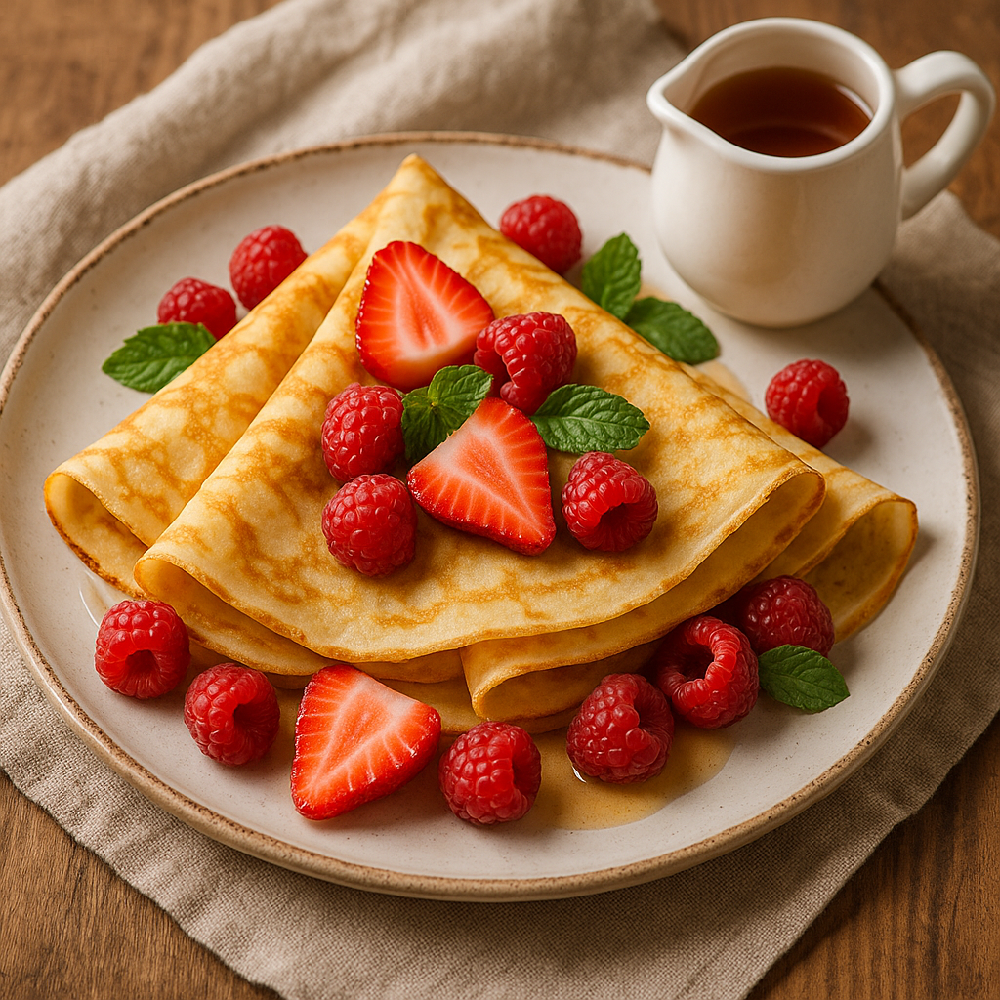
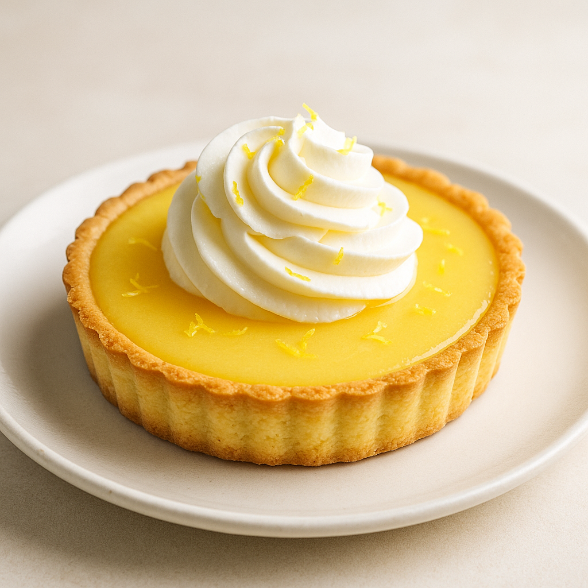

經典蘋果派
酥脆的外皮搭配香甜多汁的蘋果餡，經典不敗的甜點！

食材
- 蘋果 3 顆
- 肉桂粉 1 茶匙
- 麵粉 200 g
難度：4
① 將蘋果切塊拌入肉桂和糖。
② 派皮鋪模後填入蘋果餡，覆蓋格狀麵皮。
③ 180 °C 烘烤 45 分鐘至金黃。
歡迎來到美味食譜網站！這裡有各式各樣的食譜讓你練習使用 Beautiful Soup 的技巧：
酥脆的外皮搭配香甜多汁的蘋果餡，經典不敗的甜點！
① 將蘋果切塊拌入肉桂和糖。
② 派皮鋪模後填入蘋果餡，覆蓋格狀麵皮。
③ 180 °C 烘烤 45 分鐘至金黃。
濃厚巧克力香氣的蛋糕，是巧克力愛好者絕不錯過的甜點，配上一杯熱茶更是無與倫比。
特別推薦連結
① 攪拌蛋黃、糖、油後加入可可粉與麵粉。
② 打發蛋白後混合麵糊。
③ 170 °C 烘烤 30 分鐘。
多樣新鮮水果拌上清爽的酸甜醬汁，夏日必備！

① 所有水果切丁。
② 混合優格與蜂蜜成醬汁。
③ 淋醬拌勻即可食用。
薄薄的法式煎餅，搭配新鮮水果與鮮奶油，口感細緻滑順。
① 將蛋、麵粉、牛奶攪拌成濃稠麵糊。
② 平底鍋薄油，小火攤成薄片。
③ 盛盤後可搭配水果與鮮奶油。
酸甜檸檬餡與酥脆塔皮的完美結合，非常適合午後茶的甜點選擇。
① 塔皮預烤 15 分鐘。
② 檸檬汁、蛋黃、糖小火拌至濃稠。
③ 倒入塔皮，180 °C 再烤 10 分鐘。